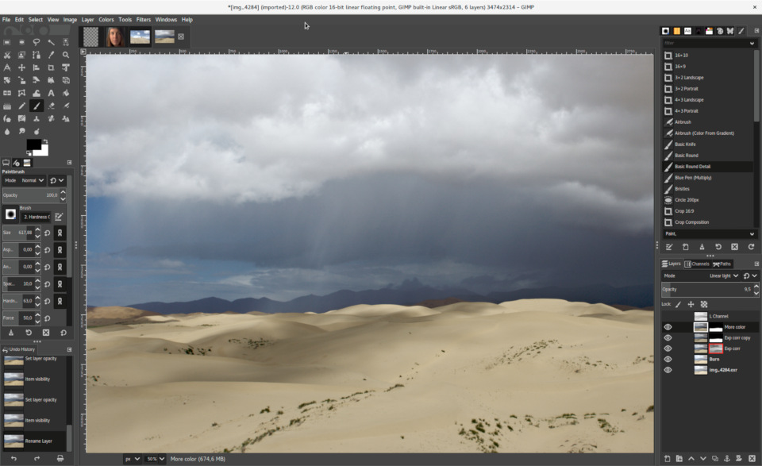

Creación y edición de imágenes con GIMP
Creación y edición de imágenes con GIMP
GIMP es un programa (software) de edición de imágenes digitales en forma de mapa de bits, tanto dibujos como fotografías. GIMP son las siglas en inglés de GNU Image Manipulation Program. Es un programa libre y gratuito. Forma parte del proyecto GNU y está disponible bajo la Licencia pública general de GNU.
Es el programa de edición de gráficos disponible en más sistemas operativos (GNU/Linux, Microsoft Windows y macOS, entre otros).
GIMP tiene herramientas que se utilizan para el retoque y edición de imágenes, dibujo de formas libres, cambiar el tamaño, recortar, hacer fotomontajes, convertir a diferentes formatos de imagen, y otras tareas más especializadas. Se pueden también crear imágenes animadas en formato GIF.
Obra publicada con Licencia Creative Commons Reconocimiento Compartir igual 4.0